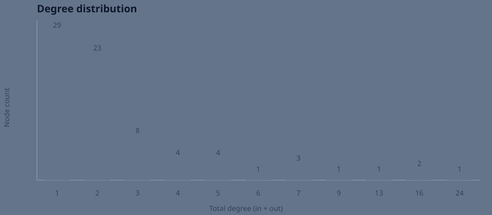

MissionControl · Graph Explorer
Interactive and static projections of the same governed interaction graph. Renderers are non-authoritative and fail independently.
← Main Mycelium control surface · canonical Pages graph · analysis JSON · source/original
Interaction graph
Select a node for degree, state, lineage and governed link.
Plotly · degree distribution
Plotly is supplemental; SVG fallback remains available.
Plotly · in/out-degree relation
Static evidence
Committed SVG fallback:

Matplotlib PNG generated during governed Pages/publication build · Matplotlib renderer source · analysis/fallback builder source
Highest-degree nodes
| Node | Type | State | In | Out | Total |
|---|